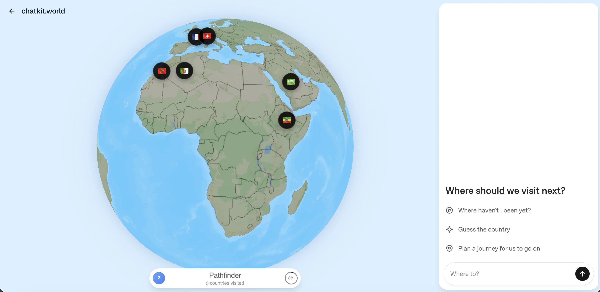
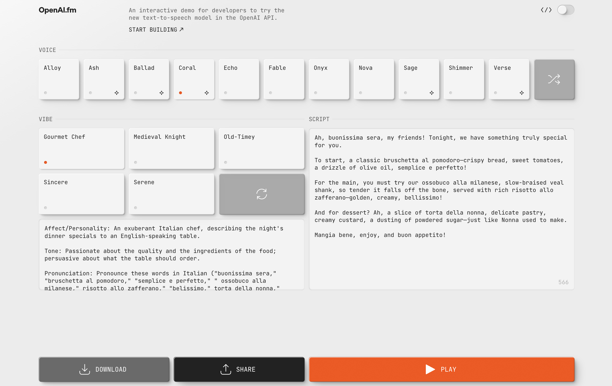
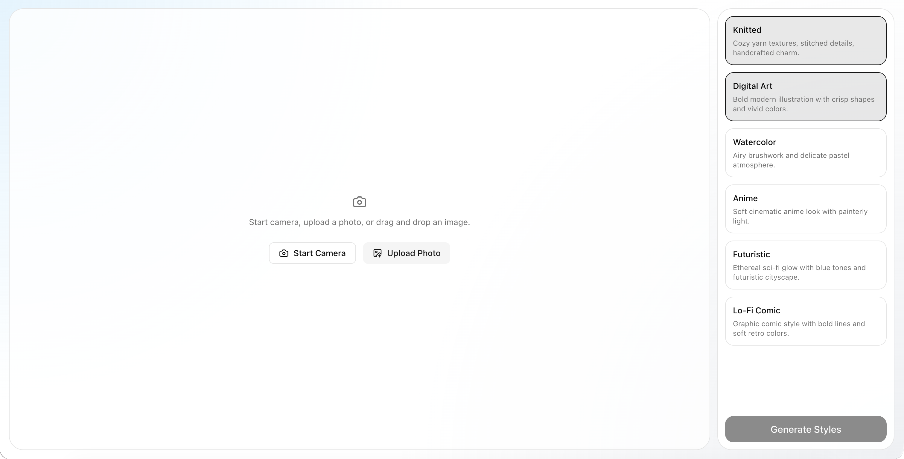

Realtime Solar System result
Related projects

Chatkit.world
This map-based chat was built with the Agents SDK for the back-end and...
gpt-5.1 Agents SDK Next.js

OpenAI.fm
This demo lets you try out the OpenAI text-to-speech voices by selecting a...
Try live demo ↗
gpt-4o-mini-tts Speech API Next.js

Photobooth Demo
This photobooth demo lets you capture or upload a portrait, choose style...
GPT Image 2 Image API Next.js